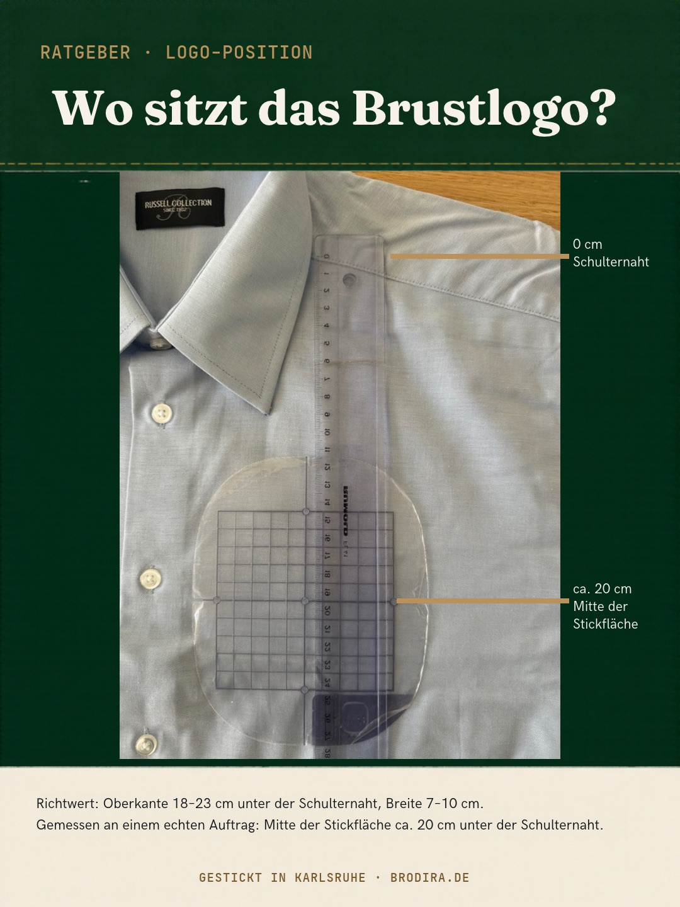

Home › Guide › Logo size and position
Guide
Embroidered logos: which size and position?
An embroidered chest logo is usually 7 to 10 cm (2.75 to 4 in) wide and sits on the left chest, on polos about 18 to 23 cm (7 to 9 in) below the shoulder seam. On caps the logo sits front centre and is at most about 5.5 cm (2.2 in) high. Embroidered text should be at least 5 to 6 mm (0.2 to 0.25 in) high; we embroider names at about 1 cm (0.4 in). The exact size depends on the garment, the logo and the level of detail. We set it on an embroidered sample before the run.
By BRODIRA, embroidery workshop in Karlsruhe-Durlach, Germany. We embroider logos and names from 1 piece and ship to Germany, Austria and Switzerland. As of November 2026.
From 1 piece · 3–5 working days · Sample before the run · Quote usually within 1 working day
Request a quoteIn short
- Chest logo: 7 to 10 cm (2.75 to 4 in) wide, on the left chest.
- Cap front: up to about 5.5 cm (2.2 in) high and 12 cm (4.7 in) wide, centred above the peak.
- Text: at least 5 to 6 mm high, names about 1 cm.
- Before the run you see the size on an embroidered sample.
Guide values by position
| Position | Typical size | Works on | Note |
|---|---|---|---|
| Left chest | 7–10 cm (2.75–4 in) wide | Polo, shirt, sweatshirt, jacket | The classic. A name fits underneath. |
| Right chest | 7–10 cm (2.75–4 in) wide | Polo, shirt, jacket | For a second logo, name or job title. |
| Centre chest | 8–10 cm (3–4 in), larger on hoodies | Hoodie, sweatshirt, T-shirt | On a hoodie, above the front pocket. |
| Sleeve / upper arm | 5–8 cm (2–3 in) | Polo, jacket, hoodie | For a sponsor, flag or web address. |
| Back of neck | short lettering up to about 8 cm (3 in) wide | Polo, shirt, hoodie | Below the collar, for a web address or short text. |
| Back | up to about 35 × 20 cm (14 × 8 in) | Jacket, hoodie, club wear | For a club name, crest or lettering. |
| Cap front | up to approx. 5.5 cm (2.2 in) high, usually 10–12 cm (4–4.7 in) wide | Structured cap, snapback | Centred above the peak. Across front and sides up to 36 cm (14 in) wide. |
| Cap side | up to approx. 5 × 5 cm (2 × 2 in) | Cap | For a second motif, year or name. |
| Bag / tote bag | depends on the bag, size in the quote | Cotton bag | Seams and inner pockets limit the area. |
These are guide values, not a standard. We measure a wide logo by its width and a tall crest by its height.
Chest logo: where it sits

The chest logo sits on the left, as seen by the wearer. On polos and shirts the top edge is about 18 to 23 cm (7 to 9 in) below the left shoulder seam. Horizontally it is centred between the placket and the side seam. Measured from the collar: about 7 to 10 cm (3 to 4 in) below it.
On women's cuts we place the logo about 2.5 cm (1 in) higher. On large sizes it moves about 1 cm lower per size; on children's sizes it sits higher and smaller. If the garment has a chest pocket, the logo goes above the pocket or on it, never across the pocket edge.
How small can text be?
Embroidered text should be at least 5 to 6 mm (0.2 to 0.25 in) high. Lowercase letters are only about 70 per cent as tall as capitals, so small text often reads better in capitals. On caps we plan slightly larger, because the fabric is stiffer and curved.
We embroider names on clothing with a letter height of about 1 cm (0.4 in). Very fine lines and colour gradients are simplified: lines and outlines need a stitch width of at least about 2 mm. We embroider with up to 10 thread colours in Madeira thread. Fewer colours often look clearer, especially on small logos.
Caps: what the frame allows
A cap is embroidered in its own cap frame. The embroidery area there is low because the peak is in the way: at most about 6 cm (2.4 in). We embroider caps in a wide cap frame up to 36 cm (14 in) across, so lettering can run from the front over the sides. Caps with a front panel lower than 5 cm (2 in) and peaks longer than 8 cm (3 in) are poorly suited. Structured caps with a firm front panel carry a logo best.
Combining several positions
- Company: logo left chest, name or job title underneath
- Club: crest left chest, name on the back, sponsor on the sleeve
- Start-up: logo left chest, web address at the neck
- Practice or hotel: logo left chest, name right chest
Each additional position is a separate step. The cost is stated in the quote. For an overview of what drives the price, see Price factors.
Setting the size without risk: the sample
- You send your logo, ideally as a vector file (AI, EPS, PDF or SVG). Good PNG or JPG files work too.
- We suggest size, position and thread colours and create the embroidery file.
- Before the run we embroider a sample. You see your logo on real fabric and approve it.
- The embroidery file is saved. On reorders the logo sits in the same place, even for a single piece.
How to prepare your logo is explained in Prepare your logo for embroidery. What happens during digitising is covered in Logo digitising.
Frequently asked questions
How big is an embroidered chest logo?
Usually 7 to 10 cm (2.75 to 4 in) wide. Slightly smaller on women's cuts and children's sizes. We set the exact size on the sample.
Where does the logo go on a polo shirt?
On the left chest, as seen by the wearer. The top edge sits about 18 to 23 cm (7 to 9 in) below the shoulder seam, centred between placket and side seam.
How big can a logo be embroidered on a cap?
Front centre up to about 5.5 cm (2.2 in) high and usually 10 to 12 cm (4 to 4.7 in) wide. On the side, smaller motifs up to about 5 × 5 cm (2 × 2 in) are common. Lettering can also run across the front and sides, up to 36 cm (14 in) wide.
How small can embroidered text be?
At least 5 to 6 mm (0.2 to 0.25 in) high. We embroider names on clothing with a letter height of about 1 cm (0.4 in).
Can you embroider on the sleeve, neck and back?
Yes. On the sleeve we embroider small logos of 5 to 8 cm, at the neck short lettering, on the back large motifs up to about 35 × 20 cm (14 × 8 in).
Can I see the size before the run?
Yes. Before the run you receive an embroidered sample for approval.
Can I order from anywhere in Germany, Austria or Switzerland?
Yes. We embroider from 1 piece, usually within 3 to 5 working days, and ship insured to Germany, Austria and Switzerland.
Have your logo embroidered
Send your logo, garment, quantity and preferred position to info@brodira.de or via WhatsApp to +49 177 2647431. You usually receive a quote within one working day.
Request a quoteNext: Logo embroidery · Polos & workwear · Name series · Clubs & sports teams · Ordering from all over Germany